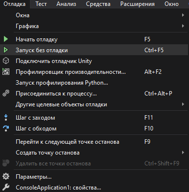
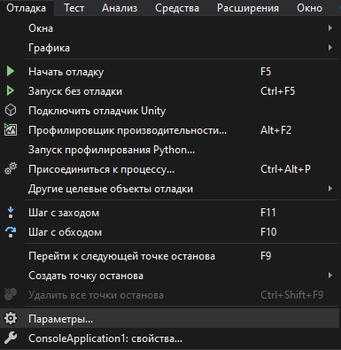

МИНИСТРЕСТВО НАУКИ И ВЫСШЕГО ОБРАЗОВАНИЯ РОССИЙСКОЙ ФЕДЕРАЦИИ
Федеральное государственное автономное образщовательное учреждение высшего образования
"КРЫМСКИЙ ФЕДЕРАЛЬНЫЙ УНИВЕСИТЕТ им. В. И. ВЕРНАДСКОГО"
ФИЗИКО-ТЕХНИЧЕСКИЙ ИНСТИТУТ
Кафедра компьюьтерной инженерии и моделирования
Отчет по Лабораторной работе №1
по дисциплине "Программрование"
Студента первого курса группы ПИ.б.о.191(1)
СЕМЕНЕНКО ЕВГЕНИЯ ВАЛЕРЬЕВИЧА
Направления подготовки 09.03.04 "Программная инженерия"
|
Научный руководитель |
(оценка) |
Чабанов В. В. |
Симферополь, 2019
Целью данной лабораторной работы является изучение базовых возможностей и компонентов среды разработки Visual Studio.
Как создать консольное приложение С++?
Чтобы создать приложение С++, следует запустить среду разработки Visual Studio, перейти по пути "Файл / Создать / Проект" или воспользоваться сочетанием клавиш Ctrl+Shift+N для вывода следующего окна:
Рис. 1: Окно создания приложения.
В запущенном окне нужно нажать на вкладку "Консольный проект С++" и выбрать директорию его расположения:
Рис. 2: Создание консольного проекта.
Как изменить цветовую схему среды?
Для того, чтобы изменить фон в Visual Studio, необходимо в строке меню нажать на вкладку "Средства", после чего выбрать пункт параметры:
Рис. 3: Параметры.
В появившемся окне нажать на группу "Общие" и выбрать нужную цветовую схему:
Рис. 4: Выбор цветовой схемы.
Для завершения операции следует нажать кнопку "ОК".
Как закомментировать блок кода средствами Visual Studio?
Для того, чтобы закомментировать код в Visual Studio, пользователю потребуется зажать комбинацию клавиш Ctrl+K, что приведет к комментированию строки. Те же действия приведут к ее раскомментированию.
Как открыть в проводнике папку, с помощью средств Visual Studio?
Для того, чтобы открыть в Проводнике папку с проектом, нужно перейти по пути "Файл / Проект / Открыть папку", после чего выбрать нужную директорию с проектом:
Рис. 5: Открытие папки с проектом.
Какое расширение файла-проекта используется в Visual Studio?
В большенстве случаев в Visual Studio используются файлы .proj (C++ - .vcxproj).
Как запустить код без отладки?
Чтобы запустить код без отладки, нужно навести курсор мыши на вкладку "Отладка" и выбрать пункт "Запуск без откладки", то есть - "Отладка / Запуск без отладки":

Рис. 6: Запуск кода без отладки.
Также Пользователь может нажать сочетание клавиш Ctrl+F5.
Как запустить код в режиме отладки?
Если Пользователь хочет запустить код в режиме отладки, то Ему нужно перейти к "Отлдка / Начать отладку":
Рис. 7: Запуск кода в режиме отладки.
Либо зажав клавишу F5.
Как установить Breakpoint?
Для того, чтобы установить точку останова, иначе называемую breakpoint, нужно перейти по пути: "Отладка / Параметры / Параметры:

Рис. 8: Параметры.
После чего установить "галочку" в пункте "Выделить всю строку исходного кода для точек останова и текущего оператора"
Рис. 9: Пункт выделения строки.
Работа с кодом.
Имеется следующий код:
Рис. 10: Код программы.
В приложении я переключился в конфигурацию сборки "Debug" и установил точки останова на пятой и шестой строках. После этого я запустил приложение в режиме отладки и, используя кнопку "Продолжить", перемещался от ожной точки останова к другой. В пятой строке переменная приняла значение -858993460. В шестой же - 5. Далее я изменил код на следующий:
Рис. 11: Код программы.
Я провел над ним те же операции, что и над предыдущим. Итог: в пятой строке кода переменная i имеет значение i -9.2559631349317831e+61, в шестой же ей присваивается значение 5.(0).